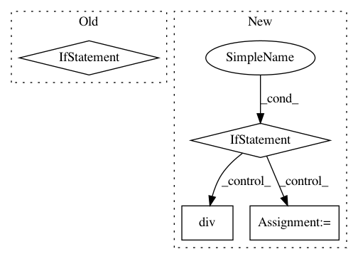

a850f4a77146f79da97a151281e474ee0cd70d1b,onmt/utils/loss.py,LossComputeBase,__call__,#LossComputeBase#Any#Any#Any#Any#Any#Any#Any#,114
Before Change
trunc_size = batch.tgt.size(0) - trunc_start
trunc_range = (trunc_start, trunc_start + trunc_size)
shard_state = self._make_shard_state(batch, output, trunc_range, attns)
all_shards = (
shards(shard_state, shard_size)
if shard_size > 0 else (shard_state,))
total_loss = 0
batch_stats = onmt.utils.Statistics()
for i, shard in enumerate(all_shards):
loss, stats = self._compute_loss(batch, **shard)
After Change
trunc_size = batch.tgt.size(0) - trunc_start
trunc_range = (trunc_start, trunc_start + trunc_size)
shard_state = self._make_shard_state(batch, output, trunc_range, attns)
if shard_size == 0:
loss, stats = self._compute_loss(batch, **shard_state)
return loss / float(normalization), stats
batch_stats = onmt.utils.Statistics()
for shard in shards(shard_state, shard_size):
loss, stats = self._compute_loss(batch, **shard)
loss.div(float(normalization)).backward()
batch_stats.update(stats)
return None, batch_stats
In pattern: SUPERPATTERN
Frequency: 4
Non-data size: 4
Instances
Project Name: OpenNMT/OpenNMT-py
Commit Name: a850f4a77146f79da97a151281e474ee0cd70d1b
Time: 2019-02-01
Author: guillaumekln@users.noreply.github.com
File Name: onmt/utils/loss.py
Class Name: LossComputeBase
Method Name: __call__
Project Name: dask/dask-ml
Commit Name: 233f859f7218e31357d05aa8c3752dc552197130
Time: 2017-10-30
Author: TomAugspurger@users.noreply.github.com
File Name: dask_ml/preprocessing/data.py
Class Name: MinMaxScaler
Method Name: inverse_transform
Project Name: mozilla/TTS
Commit Name: b5f2181e04ebe293f39c49a4304861c52218b7c4
Time: 2018-02-23
Author: egolge@mozilla.com
File Name: layers/tacotron.py
Class Name: Decoder
Method Name: forward
Project Name: mozilla/TTS
Commit Name: 9b4aa92667ce7977f30f9b6473b567567a78046f
Time: 2018-03-19
Author: egolge@mozilla.com
File Name: layers/tacotron.py
Class Name: Decoder
Method Name: forward